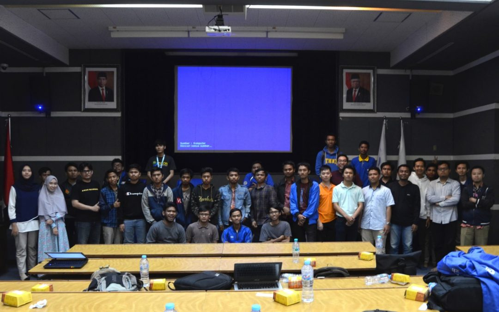

Hadapi Perkembangan Inovasi di Era Digital, HIMIT PENS Gelar Workshop Microservice
by Reporter PENS | Dec 10, 2019

Surabaya, pens.ac.id – Guna membekali mahasiswa mengenai microservice, Himpunan Mahasiswa Teknik Informatika (HIMIT) Politeknik Elektronika Negeri Surabaya (PENS) telah usai mengadakan workshop penerapan konsep microservice pada Minggu (8/12). Dengan mengusung tema “Getting Started Microservice with Docker”, kegiatan kali ini HIMIT PENS berkolaborasi dengan Komunitas Python Surabaya dan mengundang Nanang Suryadi selaku Back End Engineer Warung Pintar sebagai pemateri. Bertempat di Ruang Teater Gedung D3 PENS, kegiatan ini terbuka untuk umum.
Dengan latar belakang semakin berkembangnya inovasi di era digital saat ini, banyak ide – ide atau inovasi baru yang direalisasikan melalui aplikasi ke dalam kehidupan nyata. Namun, semakin kompleksnya ide tentang aplikasi tersebut, membuat proses pengembangan aplikasi semakin sulit. Dari hal tersebut, HIMIT PENS berkeinginan untuk mempermudah proses pengembangan aplikasi yang kompleks, salah satunya dengan menerapkan konsep microservice.
Dimulai pada pukul 08.30 WIB, acara dibuka dengan sambutan oleh Tri Harsono, S.Si., M.Kom., Ph.D. yang merupakan Kepala Departemen Teknik Informatika dan Komputer, serta Irvan Eksa Mahendra selaku Penanggung Jawab Acara. Setelah itu, kegiatan dilanjutkan dengan penyampaian meteri dan workshop yang disampaikan oleh Nanang Suryadi. Antusias peserta pun semakin tampak ketika dilangsungkannya sesi tanya jawab. “Microservice ini salah satu arsitektur perangkat lunak yang banyak sekali kegunaannya, sehingga dirasa penting sekali untuk dipelajari,” ujar Irvan.
Menariknya, dipenghujung kegiatan kali ini juga diumumkan tiga peserta dengan pertanyaan terbaik untuk mendapatkan hadiah yang disediakan oleh panitia. Kegiatan ditutup dengan pemberian cinderamata kepada pemateri dan juga foto bersama dengan seluruh peserta yang hadir. Dengan berakhirnya workshop kali ini, diharapkan para peserta dapat menambah wawasan tentang pengembangan aplikasi menggunakan konsep microservice. “Workshop ini bermanfaat sekali dan sangat informatif bagi saya, sehingga dapat mengenal lebih dalam tentang microservice,” ungkap Adis Azhar, peserta dari Institut Teknologi Sepuluh Nopember (ITS) Surabaya. (raf/dya)